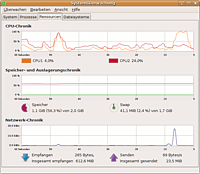

Wiki
Mitmachen
- Wikiartikel anlegen
- Howto anlegen
- Wiki-Referenz
- Wiki-Syntax
- Baustellen
- Artikelideen
- Ungetestete Artikel
- Ausbaufähige Artikel
- Fehlerhafte Artikel
- Rund ums Wiki
Konfiguration
- Backlinks anzeigen
- Exportieren
Multicore
Dieser Artikel wurde für die folgenden Ubuntu-Versionen getestet:
Dieser Artikel ist größtenteils für alle Ubuntu-Versionen gültig.
Zum Verständnis dieses Artikels sind folgende Seiten hilfreich:
Moderne Prozessoren besitzen häufig zwei oder mehr Kerne (multi-core). Für den Anwender bedeutet dieses, dass mit dem System ein flüssigeres Arbeiten möglich ist, da zusätzliche Kerne für neue Aufgaben bereit stehen und das System dann nicht erst warten muss, bis Ressourcen verfügbar sind. Ubuntu unterstützt von Haus aus solche Prozessoren. In seltenen Fällen kommt es hier zu Problemen, so dass das System nur einen Kern erkennt und somit nicht mit voller Leistung läuft.
Dabei ist zu beachten, dass Programme üblicherweise immer nur einen Kern benutzen, es sei denn sie sind für den Einsatz auf Mehrkern-CPUs optimiert. So ist es nicht ungewöhnlich, dass ein Programm einen Kern voll auslastet, der zweite Kern jedoch ungenutzt bleibt.
Diagnose¶
Hat man den Verdacht, dass das System nicht mit voller Leistung läuft, sollte man erst kurz analysieren, ob Ubuntu alle Prozessorkerne benutzt. Hierfür gibt es verschiedene Wege. Die Desktop-Umgebungen bieten üblicherweise Werkzeuge zur Systemüberwachung an. Dort kann man die Auslastung der CPU ansehen.

MATE/Xfce¶
Bei Ubuntu MATE und Xubuntu kann man die Systemüberwachung nutzen.
Ubuntu MATE: "System -> Systemverwaltung -> Systemüberwachung -> Ressourcen"
Xubuntu: "System -> Systemüberwachung -> Ressourcen"
Wurde die Mehrkern-CPU vom System richtig erkannt, so sieht man hier pro CPU einen Graphen mit der Prozessorauslastung des jeweiligen Kerns.
KDE¶
Unter KDE kann man den Systemmonitor über
"K-Menü -> Anwendungen -> System -> System Monitor"
starten. Auf dem zweiten Reiter liegt ein voreingestelltes Arbeitsblatt, das auf vier Grafiken die Systemleistung anzeigt. Es ist jedoch möglich, unter "Datei" ein neues Arbeitsblatt anzulegen und aus der rechten Infoliste die gewünschten Monitore auszuwählen. Es ist sowohl möglich, die Gesamtauslastung der CPUs als auch der einzelnen Kerne in die selbe Grafik zu ziehen.
Terminal¶
Am ausführlichsten kann man sich in einem Terminal [2] über die im System verbaute CPU informieren. Über den Befehl
cat /proc/cpuinfo
processor : 0 vendor_id : GenuineIntel cpu family : 15 model : 6 model name : Intel(R) Pentium(R) D CPU 3.00GHz ... processor : 1 vendor_id : GenuineIntel cpu family : 15 model : 6 model name : Intel(R) Pentium(R) D CPU 3.00GHz ...
werden pro CPU bzw. Kern zahlreiche Informationen ausgegeben. Sollte hier nur ein Kern erscheinen, so sollte man sich daran machen, das Problem zu beheben.
Alternativ kann man auch lscpu ausführen.
Problembehebung¶
Kernel¶
Zuerst sollte man überprüfen, ob man den richtigen Kernel benutzt. Nur der so genannte "-generic" Kernel, der üblicherweise bei der Installation von Ubuntu automatisch installiert wird, bietet die Unterstützung für Mehrkern-CPUs. Man sollte immer darauf achten, dass das Metapaket
linux-generic
installiert ist und dass man beim Booten auch diesen Kernel auswählt. Mehr zu diesem Thema findet man im Artikel Kernel hier im Wiki.
Die konkrete Abfrage der Kernelversion geht am einfachsten über einen Befehl im Terminal [2]:
uname -r
Beispielausgabe:
2.6.22-14-generic
Bootoptionen¶
Es gibt für den Kernel Bootoptionen, die spezielle Funktionen aktivieren bzw. deaktivieren können. Auch für die Unterstützung von Mehrkern-CPUs gibt es zwei Optionen, die das Verhalten der Kernels bezüglich einer Mehrkern-CPU regeln.
Über die Option
nosmpwird die Unterstützung für Multicore-CPUs deaktiviert. Diese Option gilt als Problemlösung für manche Probleme. Doch mit dieser Option wird nun mal nur ein Kern genutzt.Des Weiteren kann man mit der Option
maxcpus=Xbestimmen, wie viele Kerne das System benutzen soll.maxcpus=1würde beispielsweise nur einen Kern einer Multicore-CPU nutzen.
Diese Optionen werden über keinen Automatismus gesetzt, sondern müssen vom Anwender selber in die Datei /etc/default/grub eingetragen werden. Daher sollte man kurz in die Datei sehen und an dieser Stelle
... ## additional options to use with the default boot option, but not with the ## alternatives ## e.g. defoptions=vga=791 resume=/dev/hda5 # defoptions=quiet splash nosmp ...
nachsehen, ob nosmp bzw. maxcpus=X dort eingetragen ist. Falls ja, sollte man die Optionen gegebenenfalls entfernen [3]. Sollten auch nach dem Entfernen dieser die zusätzlichen Kerne immer noch nicht erkannt werden, so sollte man auch auf die bootparameter noapic und nolapic prüfen.
Hinweis:
Nach jeder Änderung an der Datei /etc/default/grub muss die GRUB-2-Konfiguration - die in der Datei /boot/grub/grub.cfg gespeichert ist - aktualisiert werden. Andernfalls werden Änderungen beim nächsten Systemstart nicht übernommen. Dies erreicht man durch den Befehl [2]:
sudo update-grub
BIOS-Update¶
In der Vergangenheit hat es sich oft gezeigt, dass das Problem nicht im Betriebssystem zu suchen ist, sondern im BIOS des Rechners. Manche Rechner besitzen dort die Möglichkeit, Multi-Core zu deaktivieren. Andere Mainboards haben das Problem, dass Multi-Core in der genutzten BIOS-Version überhaupt nicht funktioniert.
Man sollte daher beim Rechnerstart das BIOS aufrufen, nach Einstellungsmöglichkeiten suchen und sich informieren, ob es evtl. ein BIOS-Update für das Mainboard gibt und dieses einspielen.
Diese Revision wurde am 22. April 2016 18:27 von aasche erstellt.
- Erstellt mit Inyoka
-
 2004 – 2017 ubuntuusers.de • Einige Rechte vorbehalten
2004 – 2017 ubuntuusers.de • Einige Rechte vorbehalten
Lizenz • Kontakt • Datenschutz • Impressum • Serverstatus -
Serverhousing gespendet von